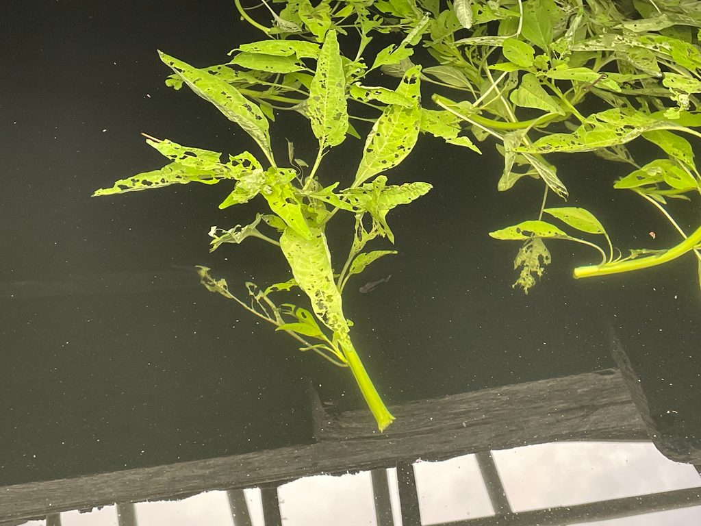
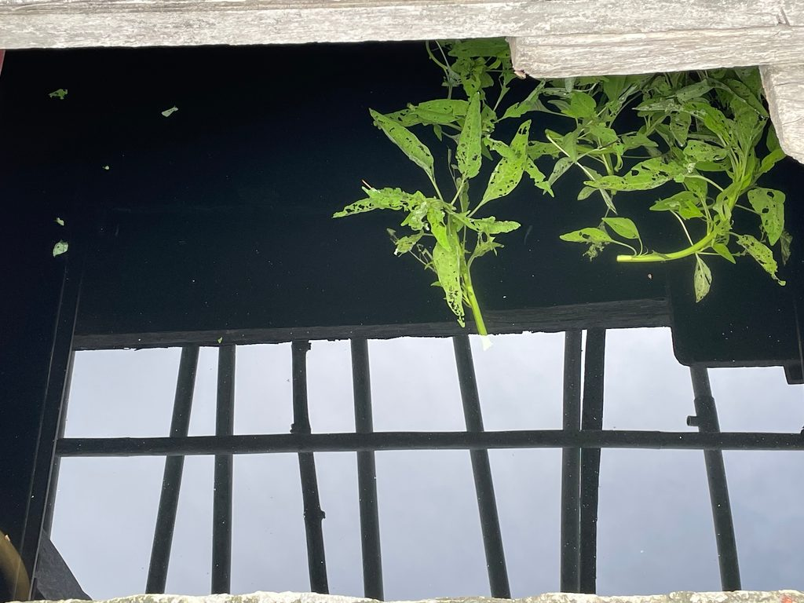
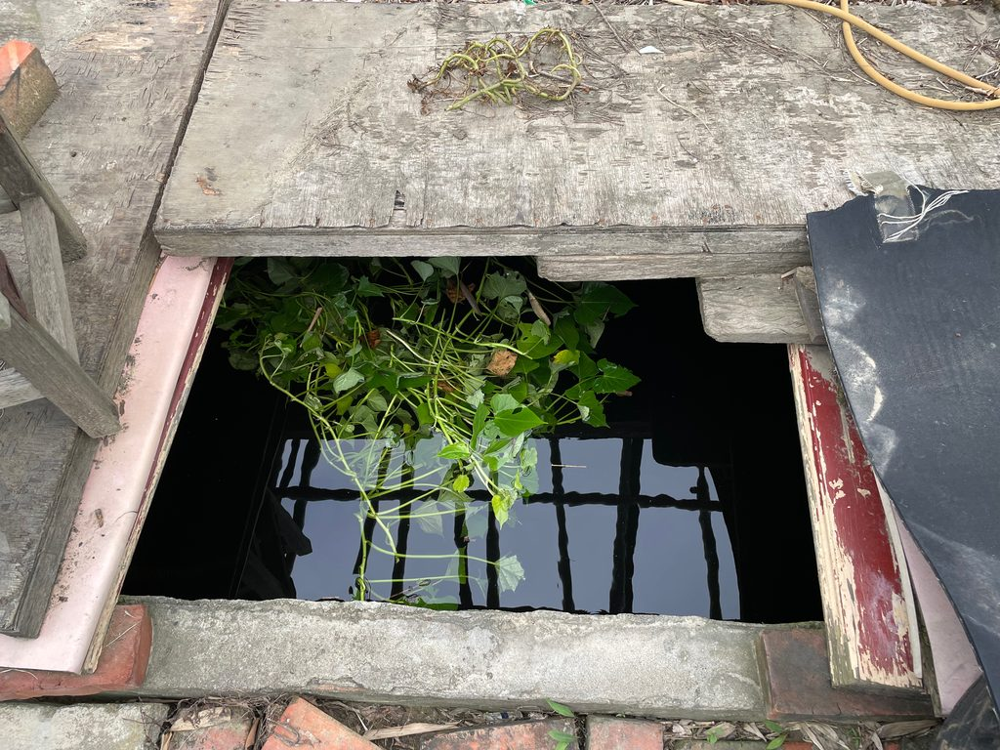
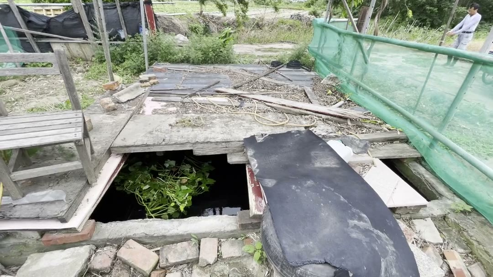
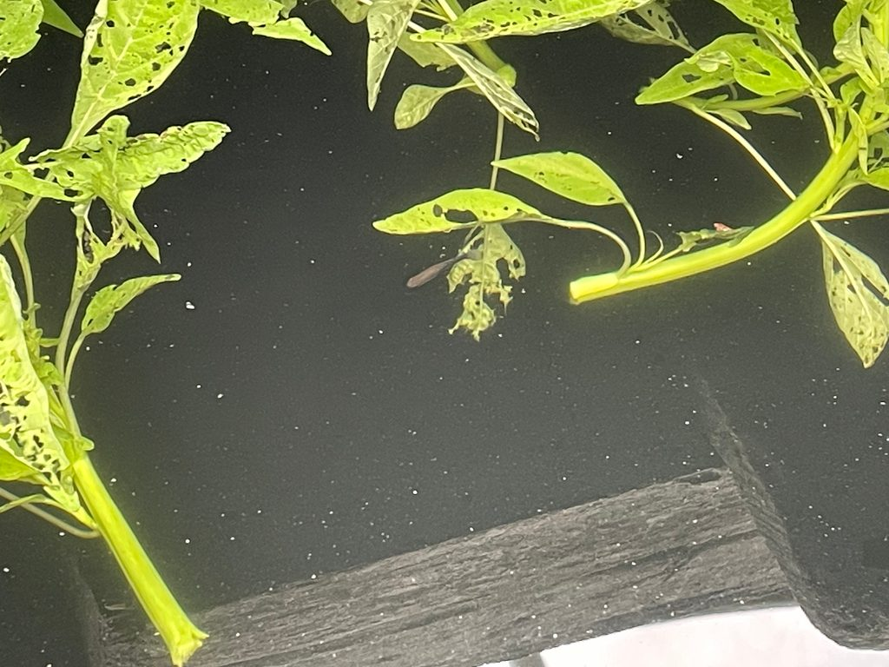

第二次書寫 · 夏 · 雨後
魚
蹲在蓄水池的小窗前，窺看吳郭魚在三層水世界裡，各自的祕密生活。

魚塘
在田裡入口處的地方，有一座蓄水的池子，長約三百公分、寬約兩百五十公分，深度未知。只有某次颱風過後要清理池底的淤泥時才將蓄積的水全數抽離，當時十來歲的我瞇著眼往下看時，目測約有三公尺深，是小朋友掉下去會完全爬不出來的深度。自從那次之後，我就不敢在池子邊調皮亂跑了。
一池地下水
這座蓄水池日常的用處是儲存抽上來的地下水。田裡主要的灌溉來源是地下水，每隔一兩個禮拜，爸爸就會用一台古老的、需要加汽油的抽水機，連接一個又一個不同顏色的水管，有灰色的硬水管、有一摺一摺的加長型水管，讓抽水機抽上來的水可以流到池子裡面。
在抽水的同時，也會將深藍色、像是塑膠袋一般的水管拉到田埂間，在水管上每隔三五公分就戳一個小洞，這樣水壓上升時就可以讓水從洞裡噴灑出來，澆灌到田埂邊的每個作物。
灑出來的水，對作物來說是天降甘霖，對我和哥哥來說就是天降彩虹。

新朋友
約莫一兩年前，爸爸某天一時興起就往池子裡面丟了幾條魚苗。我當時還以為是把家用的寵物孔雀魚放過去，想說孔雀魚絢爛繽紛的尾鰭在大黑池子裡左搖右擺的樣子應該蠻奇異的，結果後來一問才發現爸爸放的是吳郭魚，整個想像的畫面都變得美味了起來，彷彿深不見底的池子裡都塞滿了灰色、鱗片閃閃發光的肥美吳郭魚。
我第一次見到這群新朋友時其實認不出來牠們是吳郭魚，會覺得這些小魚苗長的都差不多，短約五公分、有頭有尾巴，對我來說就都是小魚。

池子上方會有木板蓋住，只留下長七十公分、寬四十公分的小窗子讓我可以窺探到水下的世界，通常要在天氣好、有陽光或微亮的陰天才看的到在游動的魚。
三層的世界
根據魚出沒的地點可以分成三層：水下約五公分內、五到十五公分，以及十五公分以下。透過那扇小窗往下看，每一層都像是不同的房間。
小魚苗最常出現的區域，也是最容易看見生態的地方。會看到一些小魚單獨從水下急衝上水面，在最上層游個七秒之後，就像是忘記自己為什麼要在這邊似的，匆匆忙忙又衝下去。
會看到三三兩兩的小魚一起出沒，大家一起嘴巴開合開合吃一些漂浮物，或是彼此追尾繞圈圈，還看過兩隻魚像雙人滑冰一樣同步游繞池子一周。是可以觀察到很豐富互動的區域，只是這區需要天氣稍微好一點才看得到。
最神秘的部分，我大概每七次才會遇到一次可以看清楚下層的機會，需要時間對、天氣剛好。這一層聚集了各種上層不會出現的長輩們，從上到下可以慢慢看到更長更大隻的魚，從十公分到三十公分不等都有，但牠們通常慢悠悠地晃過去就不見了，很少看到完整的移動跟覓食。
在最上層游個七秒之後，就像是忘記自己為什麼要在這邊似的，匆匆忙忙又衝下去。
我曾經看到令我震驚的場景，是有隻魚只剩下身體的部分沉在池子底，但因為深度很深、我還以為是自己看錯。直到兩三周後我又看見池底的風景，才發現有隻魚躺在池底，而其他魚在啄食牠的身體，雖然沒有血腥的顏色出現，但這個場景屬實讓我對魚的印象又刷新了一番。
餵魚
由於池子是在菜園裡面，爸爸餵魚的方式非常有魚菜共生的精神。像是今天他就把地瓜葉的殘葉丟到池子裡，我就蹲在池子口守著。今天的風不小，所以葉子會跟隨風的方向飄動、慢慢飄到我看不見的池子內部。

把地瓜葉的殘葉丟進池子裡，蹲在池口守著魚。
小魚通常不會直接啃食菜葉，牠們會吃從葉子掉下來、漂浮在水面上的小生物，看著牠們嘴巴一張一閉的樣子，才有辦法跟著牠們的節奏找到哪些是可以吃的食物。

正當我懷疑到底會不會有魚去吃葉子的時候，地瓜葉就順著水流又漂回我的面前，就發現葉子的周圍布滿了大大小小被啃食的痕跡，而且大部分的葉子都有被吃過的跡象。好難想像在我看不見的地方，這些葉子遭受了多少魚嘴的摧殘。
看來這些大魚只有在光照不到的地方才會想要游出來吃東西，下次要來找個好方法，觀察這些魚是如何把葉菜吞食乾淨的。